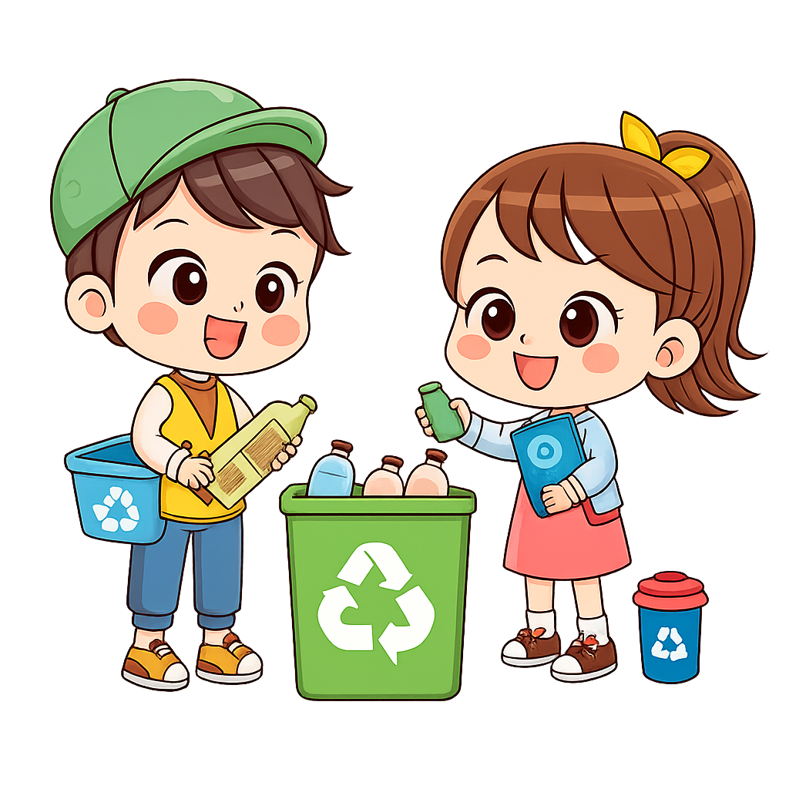
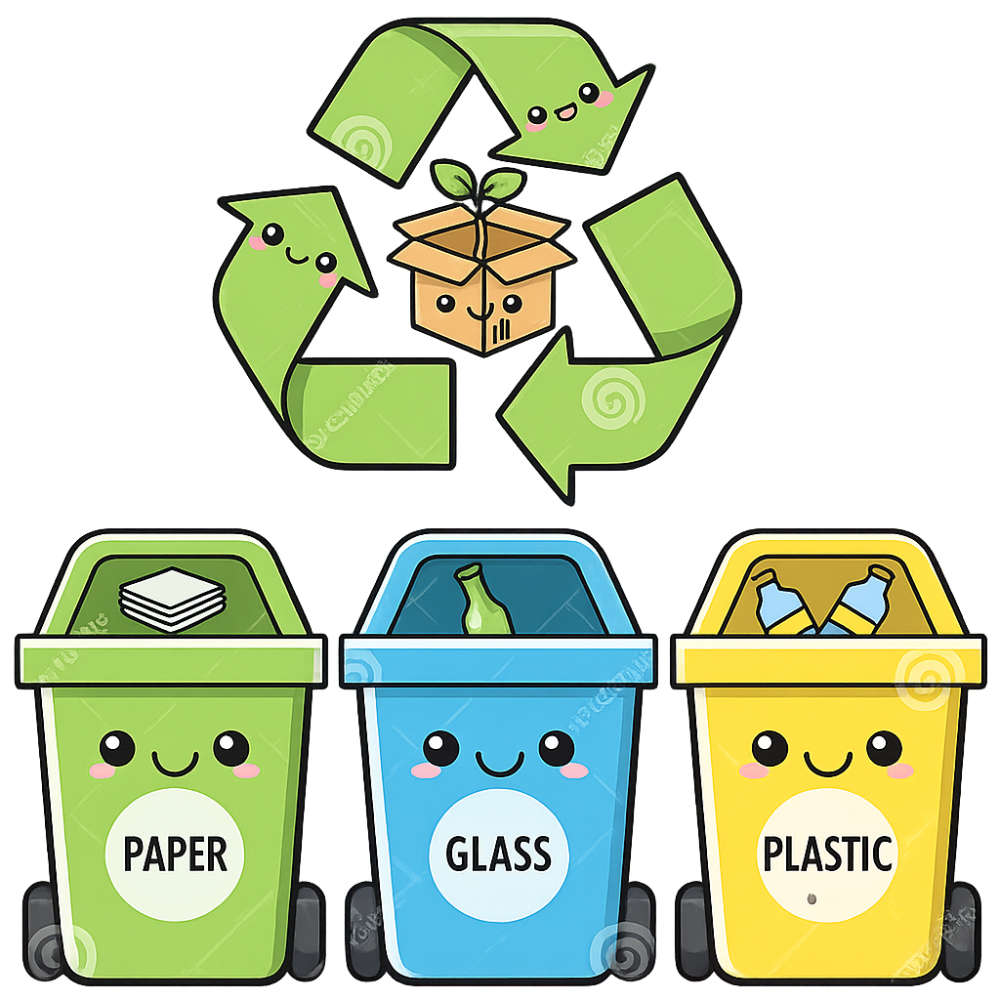
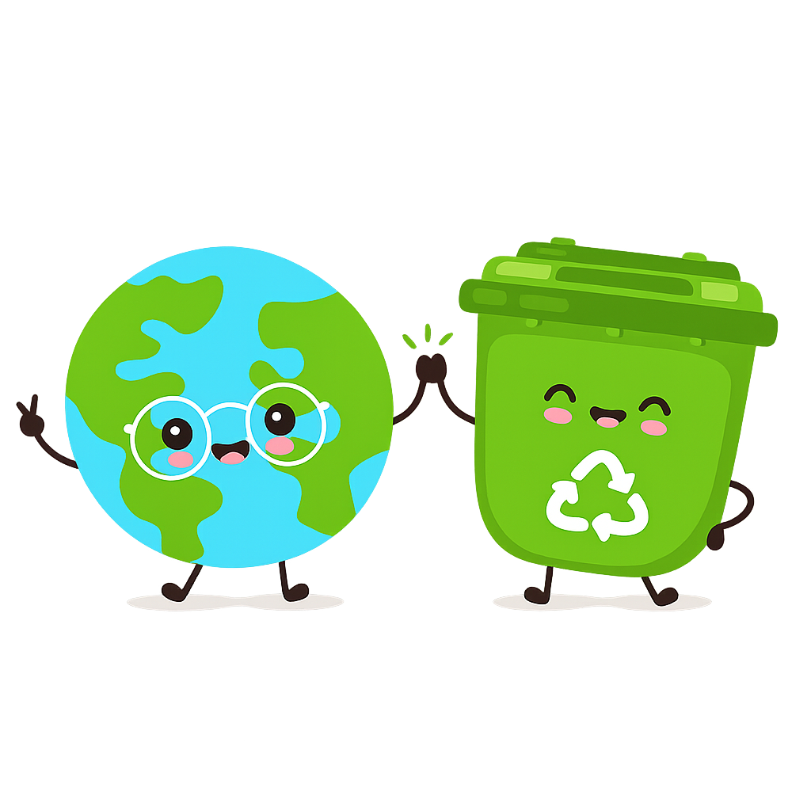

Reduce la cantidad de residuos que llegan a los basurales.
Disminuye la contaminación ambiental.
Ahorra energía y materias primas.
Favorece la conservación de los recursos naturales.
Ayuda a proteger la fauna y los ecosistemas.
Mantiene los espacios escolares más limpios y ordenados.
Paso 1:
Informar y concientizar.
Dar charlas a estudiantes y docentes sobre la importancia del reciclaje.
Colocar carteles informativos en la escuela.
Paso 2:
Identificar los residuos.
Reconocer qué materiales se generan más (papel, cartón, plástico, latas, etc.).
Paso 3:
Colocar contenedores diferenciados.
Ubicar cestos de distintos colores para cada tipo de residuo.
Señalizarlos correctamente.
Paso 4:
Separar los residuos.
Depositar cada material en el contenedor correspondiente.
Paso 5:
Organizar la recolección.
Designar responsables o coordinar con una cooperativa de reciclaje.
Paso 6:
Reutilizar materiales.
Utilizar papel, cartón o botellas para actividades escolares y proyectos.
Paso 7:
Realizar campañas periódicas.
Promover jornadas de reciclaje y concursos para incentivar la participación.
.Paso 8:
Evaluar los resultados.
Revisar periódicamente cuánto material se recicla y proponer mejoras.
.